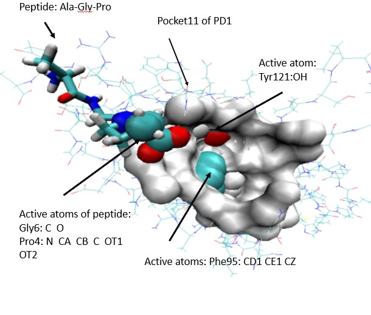
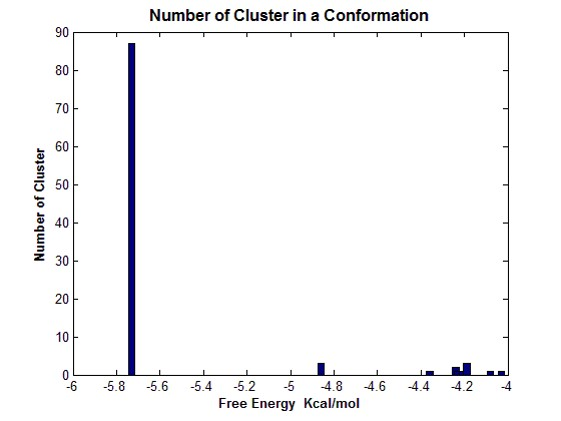

<!DOCTYPE HTML>
<html>
<head>
<meta http-equiv="Content-Type" content="text/html; charset=utf-8">
<title>Mednolia</title>
<script type="text/javascript">

  var _gaq = _gaq || [];
  _gaq.push(['_setAccount', 'UA-33863391-1']);
  _gaq.push(['_trackPageview']);

  (function() {
    var ga = document.createElement('script'); ga.type = 'text/javascript'; ga.async = true;
    ga.src = ('https:' == document.location.protocol ? 'https://ssl' : 'http://www') + '.google-analytics.com/ga.js';
    var s = document.getElementsByTagName('script')[0]; s.parentNode.insertBefore(ga, s);
  })();

</script>

</head>
<body>
 <p align=left ><a href="eVersion.html"><font color="FF0000"><h3>English Version</h3></font></a>
<table width="100%" height="40" border="0" cellspacing="0">
   	<tr>
	<p ><h1 align="center"><B>Quantum Mechanical Calculation of PD1-PDL1</B></h1></p>
<pre><h2>

Although the work of PD1-PDL1 has won the Nobel Prize, we still do not understand that the combination
of PDL1 and PD1 will cause T cells to fail to recognize cancer cells. How is the mechanism? If we cannot 
understand the microscopic mechanism of their interaction with PD1-PDL1, we will not develop cancer immunotherapy!

According to quantum mechanics, all the properties of a molecule completely depend on its wave function 
and energy level. We use the wave function of PD1 in the bound and unbound states to calculate its conductivity. 
In fact, after the combination of PD1 and PD-L1, its three-dimensional structure changes, so that the conductivity 
will change from a low conductivity state to a high conductivity state of the semiconductor. Forms electron 
channels located on the T cell membrane. Although the film is an insulator, there is a potential difference 
between the entire film, the outside is always positive, and the inside is always negative.

 

It is this electron carrier that flows from PD1 into T cells, leading to a series of biochemical reactions in 
T cells, so that T cells cannot recognize cancer cells.

Regardless of whether it is in the unbound state or the PD1 that is in the bound state with PDL1, the conductivity
of HOMOs is greater than that of LUMOs. This means that the main jump is hole jump in the protein.

Therefore, if we can use certain peptides to bind to PD1, and this binding is stronger than PD1-PDL1, then 
we can break the PD1-PDL1 signaling pathway!

    
               
</h2>
</pre></td></tr>
</table> 
</body>
</html>